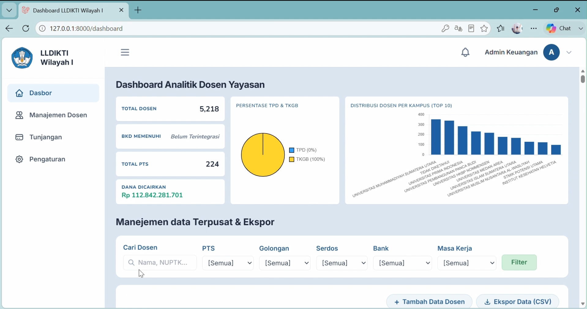

⭐ FAVORITE
Sistem Manajemen Tunjangan Serdos LLDikti
Web Development • Solo Project
Proyek Favorite berskala institusi yang saya kembangkan sepenuhnya dari nol (Solo Full-Stack Developer) saat menjalani Praktek Kerja Lapangan untuk LLDikti Wilayah 1. Sistem manajemen data serdos ini dirancang khusus untuk mengoptimalkan kinerja Divisi Keuangan. Peran saya mencakup seluruh siklus pengembangan—mulai dari perancangan arsitektur basis data, pengembangan API backend, hingga desain antarmuka frontend yang sangat aman dan intuitif.
Laravel
PHP
MySQL
Tailwind
REST API